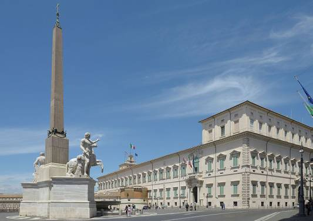

Local government
Rome constitutes a comune speciale, named "Roma Capitale",[65] and is the largest both in terms of land area and population among the 8,101 comuni of Italy. It is governed by a mayor and a city council. The seat of the comune is the Palazzo Senatorio on the Capitoline Hill, the historic seat of the city government. The local administration in Rome is commonly referred to as "Campidoglio", the Italian name of the hill.
Administrative and historical subdivisions
Since 1972, the city has been divided into administrative areas, called municipi (sing. municipio) (until 2001 named circoscrizioni).[66] They were created for administrative reasons to increase decentralisation in the city. Each municipio is governed by a president and a council of twenty-five members who are elected by its residents every five years. The municipi frequently cross the boundaries of the traditional, non-administrative divisions of the city. The municipi were originally 20, then 19.[67] In 2013, their number has been reduced to 15.[68]
Rome is also divided into differing types of non-administrative units. The historic centre is divided into 22 rioni, all of which are located within the Aurelian Walls except Prati and Borgo. These originate from the Regiones of ancient Rome, which evolved in the Middle Ages into the medieval rioni.[69] In the Renaissance, under Pope Sixtus V, they reached again the number of fourteen, and their boundaries were finally defined under Pope Benedict XIV in 1743.
A new subdivision of the city under Napoleon was ephemeral, and there were no sensible changes in the organisation of the city until 1870, when Rome became the third capital of Italy. The needs of the new capital led to an explosion both in the urbanisation and in the population within and outside the Aurelian walls. In 1874, a fifteenth rione, Esquilino, was created on the newly urbanised zone of Monti. At the beginning of the 20th century other rioni where created (the last one was Prati – the only one outside the Walls of Pope Urban VIII – in 1921). Afterward, for the new administrative subdivisions of the city the name "quartiere" was used. Today all the rioni are part of the first Municipio, which therefore coincides completely with the historical city (Centro Storico).
Metropolitan and regional government
Rome is the principal town of the Metropolitan City of Rome, operative since 1 January 2015. The Metropolitan City replaced the old province, which included the city's metropolitan area and extends further north until Civitavecchia. The Metropolitan City of Rome is the largest by area in Italy. At 5,352 square kilometres (2,066 sq mi), its dimensions are comparable to the region of Liguria. Moreover, the city is also the capital of the Lazio region.
National government
Rome is the national capital of Italy and is the seat of the Italian Government. The official residences of the President of the Italian Republic and the Italian Prime Minister, the seats of both houses of the Italian Parliament and that of the Italian Constitutional Court are located in the historic centre. The state ministries are spread out around the city; these include the Ministry of Foreign Affairs, which is located in Palazzo della Farnesina near the Olympic stadium.